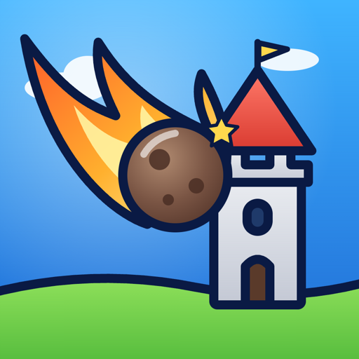

Kometix: Castle Smash
Kometix is a free physics siege game for iPhone and iPad: pull back, aim and launch a meteor through x10 multiplier gates to smash castles across 10 worlds and 200 levels.
Features
- Real arc physics with angle and power
- Multiplier gates: x10, x20, +100 (red gates shrink your swarm)
- 10 worlds, 200 levels: wind, rolling forts, giant peaks, towers
- 6 upgrades: Meteor Power, Long Aim, Crystal Hunter, Wind Breaker, Multi Shot, Spare Shot
- Plays offline, English and Turkish
Frequently asked questions
Is Kometix free?
Yes. Kometix is free to play with ads between levels. A one-time "Remove Ads" purchase removes them forever.
How do you play Kometix?
Drag back on the catapult to set angle and power, then release. Fly the meteor through blue and green gates to multiply it and destroy every heart crystal in the castle. Each level gives you 3 shots.
Does Kometix work offline?
Yes. All 200 levels play without an internet connection; only ads need a connection.
Which devices does Kometix support?
iPhone and iPad. The game is played in portrait.
Kometix: Kale Yıkma Oyunu
Kometix, iPhone ve iPad için ücretsiz fizik tabanlı kale yıkma oyunudur: geri çek, nişan al ve meteorunu x10 çarpan kapılarından geçirerek 10 dünyada 200 bölümde kaleleri yık.
Özellikler
- Açı ve güçle gerçek yay fiziği
- Çarpan kapılar: x10, x20, +100 (kırmızı kapılar sürüyü küçültür)
- 10 dünya, 200 bölüm: rüzgâr, tekerlekli kale, dev dağlar, kuleler
- 6 geliştirme: Meteor Gücü, Uzun Nişan, Kristal Avcısı, Rüzgâr Kesici, Çift Atış, Yedek Atış
- İnternetsiz oynanır, Türkçe ve İngilizce
Sık sorulan sorular
Kometix ücretsiz mi?
Evet. Kometix ücretsizdir; bölüm aralarında reklam vardır. Tek seferlik "Reklamları Kaldır" satın alması reklamları sonsuza dek kaldırır.
Kometix nasıl oynanır?
Mancınığı geri çekip açıyı ve gücü ayarla, sonra bırak. Meteoru mavi ve yeşil kapılardan geçirip çoğalt ve kaledeki bütün kalp kristallerini yok et. Her bölümde 3 atış hakkın var.
Kometix internetsiz oynanır mı?
Evet. 200 bölümün hepsi internetsiz oynanır; yalnız reklamlar için bağlantı gerekir.
Kometix hangi cihazlarda çalışır?
iPhone ve iPad. Oyun dikey ekranda oynanır.